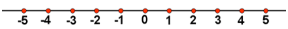
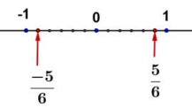
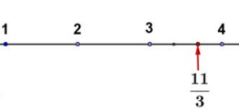
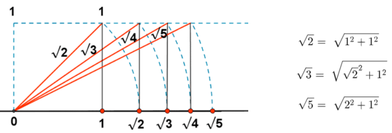

La recta real
Representación de los números enteros
La representación de números enteros se hace de forma sencilla sin más que llevar la distancia entre 0 y 1 tantas veces como sea preciso sobre la recta, hacia la derecha si el número es positivo o hacia la izquierda si es negativo.

Representación de los números racionales
- Si la fracción es propia (numerador menor que el denominador, valor menor que 1), por ejemplo \(\frac{5}{6}\), bastará con dividir la primera unidad en 6 partes iguales y tomar 5. En caso de ser negativa contaremos hacia la izquierda.

- Si la fracción es impropia (numerador mayor que denominador y por tanto valor mayor que 1), haremos la división entera (sin decimales) quedándonos con el cociente y el resto. Esto nos permite ponerla en forma mixta (suma de un entero y una fracción propia). Así por ejemplo: \(\frac{11}{3}\) = 3 + \(\frac{2}{3}\). Para representarla sólo nos tenemos que ir donde dice la parte entera 3 y la unidad siguiente (la que va del 3 al 4) la dividimos en 3 partes iguales y tomamos 2.

Recuerda que para dividir un segmento en partes iguales deberemos de usar el teorema de Thales.
Representación de los números irracionales
Solo se pueden representar en la recta real algunos números irracionales: los que corresponden a operaciones con números enteros como, por ejemplo, raíces de números naturales. Para representar números irracionales que son raíces de números naturales, usamos el teorema de Pitágoras.

Para que lo tengas más claro visualiza este video.